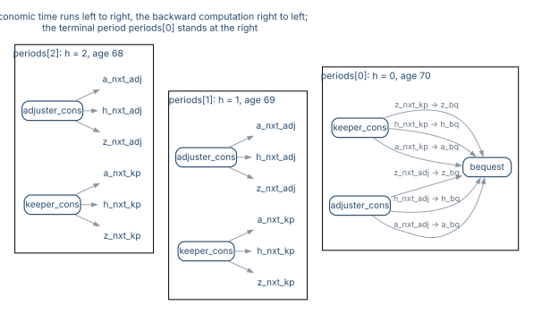
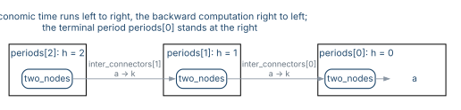

The Bellman factory¶
Summary
The Bellman factory is the part of the package that takes a model from its files to a trellis whose every stage holds its values, methods and settings. The preceding page explains how a trellis is loaded as it is written; this page is the recipe route in full. A recipe names the trellis file and, for each stage, the stage's file and the ordered files from which its parameter values, its numerical settings and its methods are read, every path written from the recipe's own folder; it leaves places, the slots, for values supplied at the call; and it writes the values that differ by period. The calls of this page give back, in turn, the model as written, a dictionary of records read from those files; the same dictionary with a constructed stage at every position and no value in any of them; and that dictionary with every stage bound to its values, its methods and its settings. One call runs the whole route, and nothing on this page solves a model.
Relationship with other documents
Builds on — Trellises: the three files, the two shapes of a period, the period index and the dictionary a trellis is; Periods: the joins between the stages of a period; Methodization: the methods files a recipe names. Formal account — Periods and the trellis: composition through compatible fields; Appendix G §7: the three binding verbs as maps from stage versions to stage versions. Used by — Factory API: the reference of the fourteen functions named here; Model directory layout: where the files of a registry are kept.
Key terminology
| Term | Meaning |
|---|---|
| Bellman factory | The part of the package that takes a model from its files to the specified trellis: load, elaborate, the three bindings, accrete, and the registry and the recipe (wiki). |
| Specification factory | The part of the Bellman factory that merges the sources a recipe names: the registry and the recipe read together, the route of §3, whose recipe is spec.yml (wiki). |
| Syntactic trellis | The model as written, the dictionary of records that load_trellis and load_recipe return and in which every adjustment is made (wiki). |
| Record | The entry of the syntactic trellis at one stage key: the stage's text and origin, its three mappings as data and its provenance. |
| Elaborated trellis | The same dictionary with an ElaboratedStage at every key, symbolic when nothing is bound and specified when every stage occurrence carries its three bindings (wiki). |
| Stage occurrence | One use of a stage file at one position of one period, an object of its own (Periods §1). |
| Symbolic | Said of a stage occurrence, or a trellis, that holds no binding (wiki). |
| Specified | Said of a stage occurrence that holds its calibration, its methods and its settings, bound in that order, or of a trellis whose every stage occurrence does (wiki). |
| Binding | One of the three mappings once a stage holds it: its calibration, its methods or its settings; the verb that writes it, with its mapping held fixed, is a binding map from stage versions to stage versions (Appendix G §7). |
| Trellis verbs | calibrate_trellis, methodize_trellis and configure_trellis, which bind every stage occurrence of a trellis with the mapping of their kind its record holds; methodize_trellis binds nothing and copies, since a record's methods files are read with the stage text when the occurrence is constructed (§6). |
| Accrete | To append one period, the one earlier in time, with the inter-period connector that joins it to the period appended before it; the horizon is the number of periods built (Trellises §6; wiki). |
| Registry | The folder the recipe stands in, from which every path the recipe writes is read, and nothing else (wiki). |
| Recipe | The file spec.yml naming the trellis file, each stage's file and, for each stage and each kind, an ordered source list (wiki). |
| Source | A file of assignments of one kind: values to parameters, values to settings, or a methods file, a .bl addition unioned with its stage file (wiki); under the registry block, assignments to names no stage declares. |
| Source list | The ordered list a recipe names for one stage, one period and one kind, slots included (wiki). |
| Slot | A $name in a source list, bound by the keyword of load_recipe of the same name (wiki). |
| Fill | The dictionary bound to a slot (wiki). |
| Replacing selection | A methods file named in a stage's methods list in place of another, as the cons-port application names stages/cons/methods.vfi.bl in place of stages/cons/methods.bl, so that one stage file takes different methods at different occurrences; a second file named after the first adds to its selection instead. |
| Sweep | A family of fills, one expression over them (wiki). |
| Join | A selected continuation-to-arrival state-field pair between stage occurrences; an authored connector has precedence, and an unclaimed equal-name pair is inferred only when it is the unique compatible choice in a consistent selection (Periods §3). |
The listings on this page use the durables model of Dobrescu and Shanker (2026), a household that keeps or adjusts its housing stock over fifty-one ages, written as the registry applications/durables/declaration/ of the repository, the directory that holds a model's files: four stage files (the tenure stage, which chooses between keeping and adjusting; the keeper's and the adjuster's consumption stages; the bequest), three methods files, two calibration files, one settings file, a period template, a trellis file and a recipe, with a second route beside them. The listings are run from the repository root.
1 The two dictionaries and the stage object¶
The factory works on two dictionaries of one shape and on one stage class, and it introduces nothing else.
The syntactic trellis is the model as written. It is the dictionary {"periods": [...], "inter_connectors": [...]}, whose periods list holds one dictionary per period, {"stages": {key: record}, "connectors": [...]}, and whose inter_connectors list holds the connectors that join adjacent periods. At each stage key stands a record: the stage's source, its text and its origin, together with the three mappings the stage is to be bound with, held as data. The calibration gives a value to each parameter the stage declares, the settings give the numerical options that the methods read, and the methods are the stage's methods files, the .bl additions whose typing entries give each operator of the stage its method, its grid and its handler and whose lines the elaborator reads as the stage file's own (Methodization), held as their texts and read with the stage text when the occurrence is constructed, so that the fields and builders an addition adds are the occurrence's own; a binding is one of these once a stage holds it, the calibration and the settings written by the verbs and the methods read at the construction. The record also carries a provenance naming the files each mapping came from. Every adjustment to a model is made in this dictionary before anything is constructed: a fill of parameter values, a value that differs by period, a replacing selection.
The elaborated trellis is the same dictionary with an ElaboratedStage at every key in place of the record. It is symbolic when no stage occurrence is bound and specified when every stage occurrence carries its three bindings. ElaboratedStage is the only stage object; a syntactic stage is nothing more than its record. A stage occurrence is one use of a stage file at one position of one period, with local fields, methods and settings. A parameter name declared by more than one stage of that period denotes one period parameter, with a reconciled declaration and value (Periods §1); each verb of §2 returns a new version of a stage occurrence and leaves the earlier version unchanged.
periods[0] is the terminal period and periods[h] the period that lies h periods before it; inter_connectors[h] joins the continuation fields that leave periods[h + 1] to the arrival fields of periods[h] (Trellises §1.1). The adjuster's stage occurrence of the terminal period is therefore model["periods"][0]["stages"]["adjuster_cons"], a record in the syntactic trellis and a stage in the elaborated one. A drawing of a period or of the trellis is made from the dictionary when it is asked for and stored nowhere (§7).
2 The calls¶
The factory has five verbs, each with one meaning. To load is to read files and return a record or the syntactic trellis. To elaborate is to turn a record's source into an ElaboratedStage with its semgraph, the semantic graph that holds its equations: elaborate_trellis makes no binding, and elaborate_stage binds the sources a record supplies unless it is given bind=False (The stage §1). To bind is to calibrate_trellis, methodize_trellis or configure_trellis, the three trellis verbs: each reads the mapping of its kind from the syntactic trellis it is given and returns a new version, methodize_trellis binding nothing, since the methods files are read at the construction, and copying each stage occurrence whose record names the files it was constructed with (§6). To accrete is to append one period. To assemble is to run the whole route, from the files with assemble_trellis or from a syntactic trellis with specify_trellis. Two further calls make drawings, and one counts what a verb changed.
| Call | Returns | What it reads and does |
|---|---|---|
bellman.stage.load_stage(path) |
the record of one stage file: its text and origin under stage, the three mappings empty, the origin and the digest of the text under provenance |
reads one stage file; elaborates nothing |
bellman.trellis.load_trellis(file) |
the syntactic trellis | reads one trellis file whose periods list writes each period out, its stages with their three mappings inline or as paths to files, or gives {template: <period file>, repeat: n} for a run of equal periods, and whose inter_connectors holds one connector per adjacent pair or one connector standing for every pair; reads each stage file for its text and digest (Trellises §3) |
bellman.trellis.load_recipe(directory, recipe, **fills) |
the syntactic trellis | reads the recipe, the trellis file and the stage files at the paths it writes, the period templates and every source file the recipe names, each once; expands each {template, repeat} entry and repeats a single inter-period connector for each adjacent pair; puts each fill in its slot; merges each source list; writes one record per stage and period with its provenance (§3) |
bellman.stage.elaborate_stage(record, bind=True) |
an ElaboratedStage, symbolic where the record supplies no source |
constructs the record's text at its origin, binds the calibration, the methods and the settings the record supplies, in that order, unless given bind=False, and reads no file; given a path string, or a dictionary that is not a record, refuses under record-shape and says to write elaborate_stage(load_stage(path)) |
bellman.trellis.elaborate_trellis(syntactic, previous=None) |
the elaborated trellis, each occurrence holding the methods files its record names and no value | constructs each distinct stage text, with the methods files its record names, once and places a full copy at each of its positions; copies a position that already holds a stage; given previous, copies from it every position whose record has the same digest and constructs the others, which is how a changed stage file alone is constructed again (§6); derives the joins and the order of each period (§7); binds nothing |
bellman.trellis.calibrate_trellis(elaborated, syntactic), bellman.trellis.methodize_trellis(elaborated, syntactic), bellman.trellis.configure_trellis(elaborated, syntactic) |
a new elaborated trellis | each reads its own kind at each key of the syntactic trellis, syntactic["periods"][h]["stages"][key]["calibration"] for calibrate_trellis, and binds the stage occurrence at the same key where the mapping differs from what it holds: for calibration in a value at a name the stage declares, the one value the period supplies standing for a parameter two of its stages declare (The trellis factory §4), for settings in any value; methodize_trellis binds nothing, the methods files of a record being read with the stage text when the occurrence is constructed, and copies each stage occurrence whose record names the files it was constructed with, refusing one whose record names others under record-shape, the change being a construction made by elaborate_trellis(syntactic, elaborated) (§6); a stage occurrence whose mapping is unchanged is copied (§6), as is one at a key where the syntactic trellis itself holds a stage object, a period built by hand |
bellman.trellis.accrete(trellis, period, inter_connector=None) |
the trellis with the period appended | appends a period dictionary at the end of periods, the period earlier in time, and writes the inter-period connector that joins it to the period appended before it at inter_connectors[len(periods) - 2]; the terminal period, appended first, takes no connector; rewrites no existing record; the period may hold records, stage objects or both; when every stage of the period is an ElaboratedStage, derives the period's joins and checks the connector against the fields of the two periods it joins (Trellises §6) |
bellman.trellis.specify_trellis(syntactic, previous=None, kinds=KINDS) |
the specified trellis | returns the trellis that elaborate_trellis(syntactic, previous) and the trellis verbs of kinds make, kinds naming any of "calibration", "methods" and "settings", the three kinds of KINDS, all three by default, the verbs applied in the order calibrate, methodize, configure whatever order kinds writes; constructs each distinct stage text once, or takes its stage occurrences from previous as elaborate_trellis does, and copies each stage occurrence once, where that route copies it once more for each verb; refuses what that route refuses, a refusal of a binding naming the stage occurrence and the kind in its notes, Stage occurrence: <address> and Binding kind: <kind> |
bellman.trellis.assemble_trellis(directory, recipe, **fills) |
the specified trellis | is specify_trellis(load_recipe(directory, recipe, **fills)), which returns the trellis that load_recipe, elaborate_trellis, calibrate_trellis, methodize_trellis and configure_trellis make, in that order, copying each stage occurrence once |
bellman.period.diagram_period(trellis, h) |
a drawing, of the kind a graph's diagram() returns |
shows the stages of periods[h] as boxes joined by their joins (§7); stores nothing |
bellman.trellis.diagram_trellis(trellis, periods=None) |
a drawing | shows the periods of an elaborated trellis, all of them or those whose indices periods lists, each as diagram_period shows it, and every inter-period connector between two of those periods as wires from the continuation fields that leave periods[h + 1] to the arrival fields of periods[h], labeled with its index and its field pairs (§7); stores nothing |
bellman.trellis.changed_positions(before, after) |
the list of positions (h, key) |
the positions whose stage occurrence in after is a new version of the one in before, read from the provenance of the two trellises; its length is the count of what a verb bound, a copy of a binding among them, since it is a new version of its position (§6) |
The stage's own verbs are unchanged: stage.calibrate(values or path), stage.methodize(addition or list of additions) and stage.configure(settings or path) each add their binding to the one stage they are called on and return it (The binding verbs), and calibrate_trellis and configure_trellis apply theirs once for each distinct stage occurrence and mapping, copying the result to the other positions of that pair (§6).
3 The registry and the recipe¶
The registry is the folder the recipe stands in, and nothing else: every path the recipe writes is read from it. In a model folder the registry is the subfolder declaration/, which holds every file the language reads (Model directory layout). The durables registry holds the recipe, the trellis file and the period template at its top, with the three files of a second route beside them (§3.6); the calibration and settings files under calibration/ and settings/; under stages/ one folder for each stage, eight in all, of which the tree below shows the four of the stages the recipe names, the other four, disc, port, Port2 and retiree_saving, holding stages that no recipe or trellis file of the folder names; a folder of the tree holds the stage file, its methods file methods.bl, the addition beside the stage file whose entries type the stage's methods and whose lines bring the endogenous grid lines of the two consumption stages and the derivative lines of the value builders (Methodization), and, where the stage has one, its note; the adjuster's folder holds a second addition, methods.adjuster_method.bl, which no recipe of the folder names (§5). A calibration or settings file is read whether it is spelled .yml or .yaml, and the two are told apart by their top keys, not by their extensions; a methods file is a .bl file.
applications/durables/declaration/
stages/ tenure/ tenure.bl methods.bl tenure.md
keeper_cons/ keeper_cons.bl methods.bl keeper_cons.md
adjuster_cons/ adjuster_cons.bl methods.bl methods.adjuster_method.bl adjuster_cons.md
bequest/ bequest.bl methods.bl
calibration/ durables.yml (the parameters the stages declare) wage_schedule.yml (the schedule and the ages)
settings/ durables.yml
period.yml the three stages of a period before the terminal one and the connector that joins tenure's branches to the decision states of the consumption stages; the order is derived from the fields, not from the list
trellis.yml the terminal period written out with the bequest and its connector, then {template: period.yml, repeat: 50};
one inter-period connector standing for every adjacent pair
spec.yml the recipe
spec.two-stages.yml trellis.two-stages.yml period.two-stages.yml the route without the tenure stage (§3.6)
3.1 What a recipe is and what it binds¶
A recipe names every file a model is read from, and it binds nothing itself. At its top, trellis: names the trellis file, whose periods list the stage keys of the model (Trellises §§1, 3). Under stages:, one entry per stage key names the stage's file under stage: and, for each of the three kinds of binding, an ordered source list of the files whose values the stage receives, with slots among them, the entries written $fill below, for values supplied at the call (§3.3); a methods list names the stage's methods files, the additions beside its stage file, and takes no slot. Every path is written from the recipe's own folder: trellis: trellis.yml, stage: stages/tenure/tenure.bl, and in a source list calibration/durables, a source file named without its extension. trellis: and stage: are both required, so that nothing is read in place of a path the recipe does not write; a recipe without trellis: is refused with the sentence "the recipe names no trellis file; write trellis: trellis.yml, the path from this folder", an entry without stage: with "the entry stages.tenure names no stage file; write stage: stages/tenure/tenure.bl, the path from this folder", both under the rule recipe-shape, and a stage: that names no .bl file is refused as load_stage refuses it (Refusals). A source name written absolute or with .. is refused under recipe-source. The recipe of the durables model, printed from the registry's file with its comment lines left out:
from pathlib import Path
from bellman.refusals import FactoryError
from bellman.stage import load_stage
from bellman.trellis import (assemble_trellis, calibrate_trellis, changed_positions, configure_trellis,
elaborate_trellis, load_recipe, methodize_trellis, specify_trellis)
registry = "applications/durables/declaration"
def without_comments(path):
"""The text of a YAML file with its comment lines left out."""
return "".join(line for line in Path(path).read_text(encoding="utf-8").splitlines(keepends=True)
if not line.lstrip().startswith("#"))
print(without_comments(f"{registry}/spec.yml"), end="")
trellis: trellis.yml
stages:
tenure: {stage: stages/tenure/tenure.bl, calibration: {all: [calibration/durables, $fill]}, settings: {all: [settings/durables, $fill]}, methods: {all: [stages/tenure/methods.bl]}}
keeper_cons: {stage: stages/keeper_cons/keeper_cons.bl, calibration: {all: [calibration/durables, $fill]}, settings: {all: [settings/durables, $fill]}, methods: {all: [stages/keeper_cons/methods.bl]}}
adjuster_cons: {stage: stages/adjuster_cons/adjuster_cons.bl, calibration: {all: [calibration/durables, $fill]}, settings: {all: [settings/durables, $fill]}, methods: {all: [stages/adjuster_cons/methods.bl]}}
bequest: {stage: stages/bequest/bequest.bl, calibration: {all: [calibration/durables, $fill]}, methods: {all: [stages/bequest/methods.bl]}, periods: [0, 0]}
registry:
calibration: [calibration/wage_schedule]
What the recipe determines is the three mappings of every stage occurrence. bellman.trellis.load_recipe("applications/durables/declaration", "spec.yml") reads the recipe, the trellis file and the stage files at the paths it writes, the period templates and every source file it names, each once, and writes one record per stage and period, holding the stage's text and digest, the three mappings merged from the lists that apply at that period, and the ordered sources that produced them; it constructs no stage, and it reads a stage file's declarations only to check the names a fill gives. The binding is the work of the trellis verbs, which read those mappings from the records (§4). A recipe cannot stand alone: without the trellis file it names there is no list of periods to write records for, and a stage the recipe names that no period holds, or a stage a period holds that the recipe does not name, is refused under recipe-template-agreement with both files named.
3.2 The source lists and the merge¶
A source is a file of assignments of one kind: calibration: values to parameters, settings: values to numerical settings, or a methods file, a .bl addition whose typing entries and lines the elaborator reads as the stage file's own (Methodization). For one stage, one kind and one period, the calibration or settings sources that apply are read in the order the list writes them and merged into one mapping, and where two sources assign the same name the later one stands. The merge is key by key: a mapping is merged into a mapping recursively, so that a later source changes the keys it names and keeps the rest; any other value, a number, a string or a list, is replaced by the later one. A calibration or settings file may name a parent: source it extends, which is read first and merged beneath it in the same way, a chain of at most ten files that may not return to itself; the keys parent, description, version and __comment__ are about the file and assign nothing. A methods list is not merged: its files are named with their extension, stages/cons/methods.bl, and unioned with the stage file in the order the list writes them, a component typed by two of them refused, so that the whole list is the stage occurrence's selection. Each file is read once per call, and a file whose top key is of another kind than the list it stands in, or a YAML file in a methods list, is refused under recipe-source. Recipe functions §2 tabulates the rules.
The durables lists are short, each a file followed by a slot, so the merge is seen best in the provenance a record carries: under provenance["source_lists"], for each kind, the ordered sources that produced its mapping, each file with its path and digest and each slot with its name, whether a fill was bound to it and the fill's names the stage took (§5). A longer list is read the same way: calibration: {all: [calibration/main, calibration/fine, $fill]} gives every value of main, then the values of fine where it assigns a name main also assigns, then the fill's.
3.3 Slots and fills¶
A slot is a $name in a source list, a place for values supplied at the call. It is bound by the keyword of load_recipe or assemble_trellis that spells the same name without the $: fill= binds $fill. The names are the author's and mean nothing by themselves; a slot name is a Python identifier, since a keyword binds it; a keyword that names no slot of the recipe is refused under recipe-slot-unknown with the slots the recipe declares. A slot's position in its list is its precedence, so that $fill written after calibration/durables stands over the file's values, and a slot bound by no keyword contributes nothing. The same slot may stand in the lists of several stages and kinds, as $fill stands in the calibration and the settings lists of all four durables stages, and one fill is then read wherever the slot stands.
A fill is the dictionary bound to a slot, and it takes one of two shapes. A fill keyed by kind, fill={"calibration": {"β": 0.93}, "settings": {"n_a": 500}}, is split, each list taking the part of its kind. A flat fill, fill={"β": 0.93}, is read against the declarations of the stages whose lists name the slot: a name a receiving stage declares as a parameter goes to the calibration lists, a name a receiving stage's settings files or methods files declare goes to the settings lists, and a flat fill that names both parameters and settings is refused under fill-mixes-kinds, since one flat mapping cannot say which name is which. A methods list takes no slot and a fill no methods part: a change of methods is a change of the files a stage's methods list names, in a second recipe beside the first (§3.6), since the files a stage occurrence takes are written in the recipe and nowhere else. A file named in place of the first is a replacing selection, and a file named after the first adds its entries to the first file's selection (§5). A fill that is no mapping is refused under slot-value-not-a-mapping, a fill with a methods part and a fill key that no receiving stage declares and no registry block admits (§3.5) under fill-names-nothing, the refusal naming the receiving stages with the names they declare and what may be written (§5).
A fill given to load_recipe produces a fresh syntactic trellis from the registry with the fill in its slot; nothing is constructed. The record's provenance marks the slot's entry bound and lists the fill's names the stage took, and the trellis verbs then bind the stage occurrences whose mapping changed and copy the rest (§5). A sweep is a family of fills, one expression over them, [bellman.trellis.calibrate_trellis(model, bellman.trellis.load_recipe(registry, "spec.yml", fill={"β": beta})) for beta in betas]; an estimation is the same expression inside its criterion function (§6.1).
3.4 Values that differ by period¶
The sources common to every period stand in a stage's all list. The sources of some periods stand in a range list beside it, keyed by the periods it covers, written "lo-hi" and counted as the trellis counts them, the terminal period being 0 (Trellises §1.1). For a period inside the range, the range list is read after the all list, so that its sources stand over the common ones and over the fill; the ranges of one stage and one kind must not overlap, and a key that is not written lo-hi is refused under recipe-shape. The within-life model of Benhabib, Bisin and Luo (2019), applications/benhabib-2019/, gives its one decision stage a wage profile constant within each of six age brackets of six years, one range list per bracket:
trellis: trellis.yml
stages:
benhabib_bellman:
stage: stages/benhabib_bellman/benhabib_bellman.bl
calibration:
all: [calibration/main, $fill]
"1-6": [calibration/wage/bracket_6]
"7-12": [calibration/wage/bracket_5]
"13-18": [calibration/wage/bracket_4]
"19-24": [calibration/wage/bracket_3]
"25-30": [calibration/wage/bracket_2]
"31-36": [calibration/wage/bracket_1]
settings: {all: [settings/default, $fill]}
methods: {all: [stages/benhabib_bellman/methods, $bellman_method]}
periods: [1, 36]
bequest: {stage: stages/bequest/bequest.bl, calibration: {all: [calibration/main, $fill]}, methods: {all: [stages/bequest/methods]}, periods: [0, 0]}
registry:
calibration: [calibration/horizon]
At periods[1] to periods[6], ages 60 to 55, the record's calibration holds the wage function of the sixth bracket, read after calibration/main and the fill; at periods[7] it holds the fifth bracket's, and at periods[36], age 25, the first bracket's.
A stage active in some periods only writes periods: [lo, hi] on its entry, the bounds counted the same way, and the stage is then absent from the records of every other period, even where the template lists it. The benhabib template lists both stages in every one of its thirty-seven periods, and the recipe places the bequest in periods[0] alone and the decision stage in periods[1] to periods[36]; a stage restricted to periods that no template holds is refused under recipe-template-agreement. A range list changes what a stage receives at some periods, and periods: changes where the stage occurs; the interval stands in the record's provenance under active.
The bequest is a stage. The file bequest.bl declares its parameters, arrives at the savings, the housing and the income state that the consumption stages continue to, under names of its own, a_bq, h_bq and z_bq, so that no arrival field of the terminal period is declared by two stages, values the wealth left behind, and reads a continuation value V[>] whose value is zero, the boundary data of the terminal period; its methods file, stages/bequest/methods.bl, adds the derivative lines of its value to its value builders' blocks, which the consumption stages' endogenous grid lines read. There is no separate terminal object of any kind: the bequest stands last in the terminal period, is active there alone through periods: [0, 0], and receives a fill of θ as any stage receives a fill of a parameter it declares.
A value that varies with every period, such as the wage schedule's income level Y and retirement income y_R of the tenure stage, has no key of the recipe and no class: the application writes each period's values into the syntactic trellis before the trellis verbs bind, from the names the registry block carries (§3.5), or calibrates each period with its own values as it accretes.
3.5 The registry block¶
The recipe's registry block names sources whose assignments no stage declares, here the eight names of calibration/wage_schedule.yml, so that a fill of one of them is not refused. They stand under the trellis's own registry key, {kind: {name: value}}, with their sources under the trellis's provenance, are bound to no stage and are copied unread by elaborate_trellis and the trellis verbs; a fill of such a name changes the registry mapping and nothing else. They are data for the application's own functions. The durables function write_wage_schedule, in applications/durables/code/wage_schedule.py, computes Y and y_R for each age from the schedule's coefficients and writes them into that period's tenure record, appending to the record's source list an entry that names the function, so that a record's provenance names every writer. It runs after every load_recipe, since a fill produces a fresh syntactic trellis, and before the trellis verbs:
import sys
sys.path.insert(0, "applications/durables/code")
from wage_schedule import write_wage_schedule
full = write_wage_schedule(load_recipe(registry, "spec.yml"))
last_age = full["registry"]["calibration"]["last_age"]
for h in (0, 10, 50):
tenure = full["periods"][h]["stages"]["tenure"]["calibration"]
print(f"periods[{h}], age {last_age - h}: Y {tenure['Y']:.4f}, y_R {tenure['y_R']}")
periods[0], age 70: Y 0.0000, y_R 0.1
periods[10], age 60: Y 0.8986, y_R 0.0
periods[50], age 20: Y 0.3193, y_R 0.0
The tenure stage chooses between keeping and adjusting. It is a branching stage; the full recipe constructs it in each of the fifty-one periods, and the whole trellis then holds one hundred and fifty-four stage occurrences.
3.6 Variants side by side¶
A second route through the same stages is a second set of the three files beside the first, spec.<name>.yml, trellis.<name>.yml and period.<name>.yml, the name chosen by the author (Trellises §5). The durables registry keeps the route without the tenure stage this way: spec.two-stages.yml names trellis.two-stages.yml under trellis: and the same source files as spec.yml, and that trellis file names period.two-stages.yml under template:. The listings that elaborate on this page read this route, which leaves out the tenure stage, and all but the call of §4 that assembles the fifty-one periods keep its three latest periods, so that each of them runs in under two seconds:
!trellis
name: durables_two_stages
periods:
- stages: [keeper_cons, adjuster_cons, bequest]
connectors:
- {a_nxt_kp: a_bq, h_nxt_kp: h_bq, z_nxt_kp: z_bq, a_nxt_adj: a_bq, h_nxt_adj: h_bq, z_nxt_adj: z_bq}
- {template: period.two-stages.yml, repeat: 50}
inter_connectors: []
Its terminal period holds the connector from both consumption stages' continuation fields to the bequest's arrival fields a_bq, h_bq and z_bq, and its fifty other periods repeat the template, which lists the two consumption stages and no connector. Its inter_connectors list is empty, so load_recipe writes the empty connector for each of the fifty adjacent pairs, and the periods are not joined to one another, since this file holds no tenure stage for the consumption stages to continue to.
A variant that changes the values a stage receives and not the route needs no second set of files: it is a further source file, calibration/near_terminal.yml or settings/fine.yml, that a recipe lists after the common one in a source list, or in a range list for some periods, and the merge of §3.2 gives it precedence. A variant supplied at the call is a fill (§3.3).
4 From the recipe to the specified trellis¶
A trellis is built backward by accretion, one period at a time from the terminal period, and nothing else is imposed on it: bellman.trellis.accrete appends each period with the connector that joins it to the period appended before it, the horizon is the number of periods built, and Trellises §6 shows a trellis built by hand this way from records or from stages already elaborated and bound. Every call of §2 that acts on a trellis is a loop of accretion and adds nothing to it: elaborate_trellis elaborates the periods in order, the three trellis verbs bind stage occurrence by stage occurrence, and assemble_trellis returns in one call the trellis they make. The recipe route is therefore two routes to the same specified trellis.
The first starts from the syntactic trellis, read by load_recipe, adjusts it where the application must, and then elaborates and binds it. The listings keep only the three latest periods of the syntactic trellis, an adjustment made in the dictionary like any other; on all fifty-one periods the same calls construct and bind one hundred and three stage occurrences:
def latest(syntactic, count):
"""The syntactic trellis cut to its `count` latest periods, the terminal period first."""
return {**syntactic, "periods": syntactic["periods"][:count], "inter_connectors": syntactic["inter_connectors"][:count - 1]}
recipe = "spec.two-stages.yml"
syntactic = load_recipe(registry, recipe)
print(len(syntactic["periods"]), "periods;", len(syntactic["inter_connectors"]), "inter-period connectors, of which",
sum(1 for connector in syntactic["inter_connectors"] if connector == {}), "empty")
print("periods[0]:", list(syntactic["periods"][0]["stages"]), " periods[1]:", list(syntactic["periods"][1]["stages"]))
three = latest(syntactic, 3)
elaborated = elaborate_trellis(three)
model = configure_trellis(
methodize_trellis(
calibrate_trellis(elaborated, three), three), three)
print(repr(model["periods"][0]["stages"]["adjuster_cons"]))
51 periods; 50 inter-period connectors, of which 50 empty
periods[0]: ['keeper_cons', 'adjuster_cons', 'bequest'] periods[1]: ['keeper_cons', 'adjuster_cons']
ElaboratedStage('adjuster_cons', specified)
The second is one call, which returns the trellis the five calls of the first route make, copying each stage occurrence once. On the whole registry it returns the fifty-one periods; its three latest periods equal, stage occurrence by stage occurrence, the trellis the first route built:
model_in_one = assemble_trellis(registry, recipe)
print(len(model_in_one["periods"]), "periods")
print(all(model["periods"][h]["stages"][key] == model_in_one["periods"][h]["stages"][key]
for h in range(3) for key in model["periods"][h]["stages"]))
5 What each call prints¶
The names registry, recipe, syntactic, three, elaborated and model are those of §§3 and 4. The record of the adjuster at the terminal period holds the stage's origin, its three merged mappings and its provenance. The settings mapping has thirty-nine entries, of which six are printed. The record's own methods list holds the additions the recipe names, each as its text with its origin, since the elaborator reads them with the stage text; the methods are printed here as the methodized stage prints them, by place, with the word, the grid and the handler typed there:
record = syntactic["periods"][0]["stages"]["adjuster_cons"]
print(record["stage"]["origin"])
print("calibration:", record["calibration"])
print("settings:", dict(list(record["settings"].items())[:6]), "... of", len(record["settings"]))
print("provenance:", {key: value for key, value in record["provenance"].items() if key != "source_lists"})
print("additions:", [(addition["origin"], addition["text"].splitlines()[0]) for addition in record["methods"]])
print("methods:")
print(model["periods"][0]["stages"]["adjuster_cons"].methods)
applications/durables/declaration/stages/adjuster_cons/adjuster_cons.bl
calibration: {'R': 1.045, 'R_H': 1.0, 'β': 0.945, 'α': 0.7, 'γ_c': 3.5, 'γ_h': 1.5, 'κ': 0.06, 'δ': 0.0, 'τ': 0.12, 'ρ_z': 0.82, 'σ_z': 0.11, 'θ': 1.3498, 'K': 1.3}
settings: {'n_a': 300, 'a_min': 0.01, 'a_max': 7.5, 'grid_phi': 1.01, 'b': 0.01, 'n_h': 300} ... of 39
provenance: {'origin': 'applications/durables/declaration/stages/adjuster_cons/adjuster_cons.bl', 'sha256': '3c216eb3cb57c0d6187d4e2a820822bed94eb34b748490e813179cd7de87885b'}
additions: [('applications/durables/declaration/stages/adjuster_cons/methods.bl', '@methods: adjuster_cons')]
methods:
cntn_to_dcsn.evaluate[V] !Linear(extrapolate=extrap_policy, clamp_factor=clamp_max_factor) !Cartesian(m=(w_min, w_max, n_w)) "dcsmm:interp_as_3"
cntn_to_dcsn.evaluate[D_{m}V] !Linear(extrapolate=extrap_policy, clamp_factor=clamp_max_factor) !Cartesian(m=(w_min, w_max, n_w)) "dcsmm:interp_as_3"
policy !egm(spacing=grid_phi, savings_floor=b, roots_per_housing_point=egm_n, root_scan_step=root_eps, upper_envelope=adj_upper_envelope, jump_threshold=m_bar, lookback=fues_lb, eps_d=fues_eps_d, eps_sep=fues_eps_sep, eps_fwd_back=fues_eps_fwd_back, parallel_guard=fues_parallel_guard, include_intersections=adj_include_intersections, no_double_jumps=adj_no_double_jumps, single_intersection=adj_single_intersection, disable_jump_checks=adj_disable_jump_checks, correct_jumps=correct_jumps, search_sections=n_sections) !Cartesian(a_nxt_adj=(a_min, a_max, n_a), h_nxt_adj=(h_min, h_max, n_h)) "fues-durables:make_adjuster_ops"
The record's provenance["source_lists"] holds, for each kind, the ordered sources that produced its mapping: each file with its path and digest, and each slot with its name, whether a fill was bound to it, and the fill's names that the stage declares, here none since no fill was given. The registry-level names stand under the trellis's registry key:
from pprint import pprint
pprint(record["provenance"]["source_lists"])
pprint(syntactic["registry"])
{'calibration': [{'path': 'applications/durables/declaration/calibration/durables.yml',
'sha256': '77a026308bd078082e963b0d3fe6aa2cf1f79900e9c0bd5a837698f86beb000b',
'source': 'calibration/durables'},
{'bound': False, 'names': [], 'slot': 'fill'}],
'methods': [{'path': 'applications/durables/declaration/stages/adjuster_cons/methods.bl',
'sha256': '5201257dccd839cf4ad8bbe65c5c4d8ae7d4fcc54b1156e0e2aa78f29af8012a',
'source': 'stages/adjuster_cons/methods.bl'}],
'settings': [{'path': 'applications/durables/declaration/settings/durables.yml',
'sha256': 'e176ae673908bfc8331b68a7aa671b1f7bf15bba445ce83e61b2e7d155e62e42',
'source': 'settings/durables'},
{'bound': False, 'names': [], 'slot': 'fill'}]}
{'calibration': {'earnings_scale': 1e-05,
'first_age': 20,
'last_age': 70,
'retirement_age': 60,
'retirement_income': 0.1,
'tenure_cap': 30,
'tenure_origin': 20,
'wage_coefficients': [4.329982,
0.610214,
-0.0209832,
0.0003132,
-1.72e-06,
0.0199949,
4.76e-05]}}
An elaborated stage occurrence holds the methods its record names, since the methods files are read with the stage text, and it declares its parameters and holds no value for them. The set column of par is filled from the declarations and the value column reads unbound:
adjuster = elaborated["periods"][0]["stages"]["adjuster_cons"]
print(repr(adjuster))
print(adjuster.par)
ElaboratedStage('adjuster_cons', methods)
name set value describes
β (0, 1) unbound discount factor
α (0, 1) unbound weight of consumption in utility
γ_c (1, inf) unbound curvature of utility from consumption
γ_h (1, inf) unbound curvature of utility from housing services
κ ℝ₊₊ unbound housing services per unit of the housing stock
τ ℝ₊₊ unbound cost of adjusting housing, per unit of housing bought
Each trellis verb takes the elaborated trellis and the syntactic trellis and returns a new elaborated trellis. changed_positions(before, after) lists the positions whose stage occurrence is a new version, a copy of a binding among them (§6); the others were copied unchanged. On a fresh elaboration no position holds a value, so calibrate_trellis and configure_trellis each bind all seven stage occurrences of the three periods; methodize_trellis binds none, since every occurrence already holds the methods files its record names, and a verb applied again with the same mappings binds none:
def bound_and_copied(before, after):
"""The count of positions a verb bound and the count it copied."""
bound = len(changed_positions(before, after))
return f"bound {bound}, copied {sum(len(period['stages']) for period in after['periods']) - bound}"
calibrated = calibrate_trellis(elaborated, three)
methodized = methodize_trellis(calibrated, three)
specified = configure_trellis(methodized, three)
for verb, before, after in (("calibrate_trellis", elaborated, calibrated), ("methodize_trellis", calibrated, methodized),
("configure_trellis", methodized, specified)):
print(f"{verb}: {bound_and_copied(before, after)}; the adjuster is now {after['periods'][0]['stages']['adjuster_cons']!r}")
print("calibrate_trellis again:", bound_and_copied(specified, calibrate_trellis(specified, three)))
calibrate_trellis: bound 7, copied 0; the adjuster is now ElaboratedStage('adjuster_cons', methodized)
methodize_trellis: bound 0, copied 7; the adjuster is now ElaboratedStage('adjuster_cons', methodized)
configure_trellis: bound 7, copied 0; the adjuster is now ElaboratedStage('adjuster_cons', specified)
calibrate_trellis again: bound 0, copied 7
After the three trellis verbs, par shows each parameter's value, methods the method bound at each place, and the bequest of the terminal period, a stage like the others, shows its seven values:
adjuster = model["periods"][0]["stages"]["adjuster_cons"]
print(adjuster.par)
print()
print(adjuster.methods)
print()
print(model["periods"][0]["stages"]["bequest"].par)
name set value describes
β (0, 1) 0.945 discount factor
α (0, 1) 0.7 weight of consumption in utility
γ_c (1, inf) 3.5 curvature of utility from consumption
γ_h (1, inf) 1.5 curvature of utility from housing services
κ ℝ₊₊ 0.06 housing services per unit of the housing stock
τ ℝ₊₊ 0.12 cost of adjusting housing, per unit of housing bought
cntn_to_dcsn.evaluate[V] !Linear(extrapolate=extrap_policy, clamp_factor=clamp_max_factor) !Cartesian(m=(w_min, w_max, n_w)) "dcsmm:interp_as_3"
cntn_to_dcsn.evaluate[D_{m}V] !Linear(extrapolate=extrap_policy, clamp_factor=clamp_max_factor) !Cartesian(m=(w_min, w_max, n_w)) "dcsmm:interp_as_3"
policy !egm(spacing=grid_phi, savings_floor=b, roots_per_housing_point=egm_n, root_scan_step=root_eps, upper_envelope=adj_upper_envelope, jump_threshold=m_bar, lookback=fues_lb, eps_d=fues_eps_d, eps_sep=fues_eps_sep, eps_fwd_back=fues_eps_fwd_back, parallel_guard=fues_parallel_guard, include_intersections=adj_include_intersections, no_double_jumps=adj_no_double_jumps, single_intersection=adj_single_intersection, disable_jump_checks=adj_disable_jump_checks, correct_jumps=correct_jumps, search_sections=n_sections) !Cartesian(a_nxt_adj=(a_min, a_max, n_a), h_nxt_adj=(h_min, h_max, n_h)) "fues-durables:make_adjuster_ops"
name set value describes
θ ℝ₊₊ 1.3498 weight of the bequest in utility
K ℝ₊₊ 1.3 shift of the bequest utility
α (0, 1) 0.7 weight of consumption in utility
γ_c (1, inf) 3.5 curvature of utility from consumption
R ℝ₊₊ 1.045 gross return on financial assets
R_H ℝ₊₊ 1.0 gross return on housing, received when the house is sold
δ [0, 1) 0.0 depreciation rate of housing
A fill is given to load_recipe, which returns a fresh syntactic trellis from the registry with the fill in its slot. Applied to the specified trellis with that syntactic trellis as its second argument, calibrate_trellis binds again the six stage occurrences that declare β and copies the bequest, which does not; configure_trellis binds again the six whose settings changed and copies the bequest, which has no settings list. On all fifty-one periods each verb binds one hundred and two and copies the one bequest. The earlier trellis keeps its values, and in the calibration source list of the new version's provenance the slot's entry is marked bound, with the fill's name that the stage declares in that kind:
filled = latest(load_recipe(registry, recipe, fill={"calibration": {"β": 0.93}, "settings": {"n_a": 500}}), 3)
recalibrated = calibrate_trellis(model, filled)
print("calibrate_trellis:", bound_and_copied(model, recalibrated),
"; the bequest among the bound:", (0, "bequest") in changed_positions(model, recalibrated))
model_b = configure_trellis(recalibrated, filled)
print("configure_trellis:", bound_and_copied(recalibrated, model_b))
adjuster_b = model_b["periods"][0]["stages"]["adjuster_cons"]
print("before the fill: β", adjuster.par["β"].value, " n_a", adjuster.settings["n_a"].value)
print("after the fill: β", adjuster_b.par["β"].value, " n_a", adjuster_b.settings["n_a"].value)
pprint([dict(entry) for entry in adjuster_b.provenance["source_lists"]["calibration"]])
calibrate_trellis: bound 6, copied 1 ; the bequest among the bound: False
configure_trellis: bound 6, copied 1
before the fill: β 0.945 n_a 300
after the fill: β 0.93 n_a 500
[{'path': 'applications/durables/declaration/calibration/durables.yml',
'sha256': '77a026308bd078082e963b0d3fe6aa2cf1f79900e9c0bd5a837698f86beb000b',
'source': 'calibration/durables'},
{'bound': True, 'names': ('β',), 'slot': 'fill'}]
A change of methods names other files in a stage's methods list (§3.3). The adjuster's folder holds a second addition, methods.adjuster_method.bl, the nested method of the paper: value function iteration, !vfi, with the routine of the replication code as its handler, on the adjuster's backward decision builder cntn_to_dcsn. Named after methods.bl in the adjuster's methods list, it adds that entry to the first file's selection and replaces none of it. The methods files of a record are read with the stage text when the occurrence is constructed, so the change is a change of construction: elaborate_trellis(chosen, model) constructs the adjuster's stage occurrences anew, every period's, and takes the keeper's and the bequest's from the trellis given, and the verbs then bind the values and the settings the records hold; methodize_trellis on a trellis whose records name other methods files than its occurrences were constructed with refuses them under record-shape, since no verb binds a selection. A second recipe would write methods: {all: [stages/adjuster_cons/methods.bl, stages/adjuster_cons/methods.adjuster_method.bl]} in the adjuster's entry; the registry holds none, so the listing makes the same change in the syntactic trellis, where every adjustment is made (§1), by giving the adjuster's record the second addition at each period:
from pathlib import Path
second = f"{registry}/stages/adjuster_cons/methods.adjuster_method.bl"
chosen = latest(load_recipe(registry, recipe), 3)
for period in chosen["periods"]:
period["stages"]["adjuster_cons"]["methods"].append(
{"text": Path(second).read_text(encoding="utf-8"), "origin": second})
switched = specify_trellis(chosen, model)
print(changed_positions(model, switched))
print(switched["periods"][0]["stages"]["adjuster_cons"].methods["cntn_to_dcsn"])
[(0, 'adjuster_cons'), (1, 'adjuster_cons'), (2, 'adjuster_cons')]
!vfi "fues-durables:make_adjuster_vfi"
changed_positions(model, switched) names the adjuster's positions and no other, and the adjuster's decision builder now carries !vfi with its handler beside the endogenous grid method on its policy builder.
A fill key that no receiving stage declares and no registry block admits is refused under the rule fill-names-nothing. The refusal names the slot, the key, the receiving stages with the names they declare, and what may be written; here beta is written for β. This listing prints the rule alone, so its result remains short:
try:
load_recipe(registry, recipe, fill={"calibration": {"beta": 0.93}})
except FactoryError as refusal:
print(refusal.rule)
A sweep is one expression over a family of fills. Each fill gives a syntactic trellis, and calibrate_trellis on the specified trellis binds again the stage occurrences whose β changed: six for 0.93 and for 0.96, none for 0.945, the value the calibration file holds. An estimation is the same expression inside its criterion function:
for beta in (0.93, 0.945, 0.96):
swept = calibrate_trellis(model, latest(load_recipe(registry, recipe, fill={"calibration": {"β": beta}}), 3))
print(f"β = {beta}: {bound_and_copied(model, swept)}; β read back:",
swept["periods"][0]["stages"]["adjuster_cons"].par["β"].value)
β = 0.93: bound 6, copied 1; β read back: 0.93
β = 0.945: bound 0, copied 7; β read back: 0.945
β = 0.96: bound 6, copied 1; β read back: 0.96
6 What a change makes anew¶
| The economist changes | Made anew | Kept |
|---|---|---|
| a calibration file, or a fill of parameters | by calibrate_trellis: the stage occurrences whose calibration in the syntactic trellis changed in a name they declare, and, in the same period, the stage occurrences that declare a changed name too, since the stages of a period share the parameters they declare under one name |
the graphs; their methods and settings; every earlier version, and whatever was compiled from it |
| a settings file, or a fill of settings | by configure_trellis: the stage occurrences whose settings changed |
the graphs; their calibration and methods |
| a methods file, or the selection a methods list names | by elaborate_trellis(syntactic, elaborated) and the verbs after it, or by specify_trellis(syntactic, elaborated): the stage occurrences whose methods files changed, constructed anew with their stage text, since the additions are read with it, then calibrated and configured with the values and settings their records hold; methodize_trellis binds nothing |
every other stage occurrence, copied from elaborated |
| a stage file | by elaborate_trellis(syntactic, elaborated): the stage occurrences of that file, the digest in the record detecting the change |
every other stage occurrence, copied from elaborated |
| the period template or the trellis file | by load_recipe: the shape of the trellis and the positions |
the stage occurrences whose record is unchanged |
A fill given to load_recipe produces a fresh syntactic trellis from the registry, so values the application wrote into the records period by period are written again by its function after every load_recipe, before the trellis verbs bind; such a function appends to the record's source list an entry naming its file, the names it wrote and its argument, so that a record's provenance names every writer. Only a changed stage file is constructed again: elaborate_trellis given the earlier elaborated trellis as its second argument copies every position whose record kept its digest and constructs the others. As elaborate_trellis constructs each distinct stage text once (§2), a verb binds each distinct input once; a changed selection of methods is another construction, which elaborate_trellis(syntactic, elaborated) makes at each position of the record (the table above). Where several positions hold versions of one stage file with the same bindings and recorded sources and the syntactic trellis gives them the same mapping, each mapping written with its keys in the same order, since a version prints them in that order, as it gives keeper_cons one calibration at every age, the verb binds the first and places at each of the others a copy that records its own position and parent and equals the version the verb would bind there alone; such a copy is a new version of its position, so changed_positions names it among the positions bound. Every stage occurrence is its own object; two stage occurrences with equal mappings have equal bindings and graphs and are distinct objects. Within a period, stages that declare the same parameter name share the meaning and value of that parameter, while their fields remain local. A verb binds a stage occurrence to the version it is given, never to the version of an earlier fill in a chain, and the earlier trellis is untouched. Binding changes no graph: the semgraphs of a bound version equal those of the symbolic one, and a verb writes to the bindings alone. What a change does to a numerical representation belongs to realization and is not decided here.
6.1 Many draws on many cores¶
An estimation solves the model once for each draw of its parameters, often on many cores at once. Since binding changes no graph, the specified trellis is built once, by one of the routes of §4, and each draw binds its values to that trellis with calibrate_trellis, as the sweep of §5 does; no stage is constructed, methodized or configured again. A version a verb makes starts with copies of the answers its argument had computed that the graphs determine, among them the table of each stage's wires, so that a drawn trellis holds, without computing them again, the answers the specified trellis holds. On the durables trellis of fifty-one periods and one hundred and fifty-four stage occurrences, measured in one process on an Apple machine, the build takes about 12 s and each draw about 2.5 s, of which 0.4 s is the copying of those answers. Compiling the kernels of a drawn trellis, the functions a solver calls (A piece §2), takes about 2 s where nothing but the build and the draws has been asked of the specified trellis, and 0.7 s once the specified trellis has compiled its own kernels, in 2 s, since a drawn version then carries what they read.
On one node, the trellis is built in a parent process, which asks it once for what every draw asks, by one draw of its own and, where the solver compiles kernels, by compiling them on the specified trellis, then calls gc.freeze() and only then starts its workers by fork, the operating system's call that starts a process as a copy of the running one. Each worker holds the parent's trellis and those answers, and builds nothing. On the durables trellis, a worker started after one draw made its draw in 2.1 s and compiled the kernels of its trellis in 1.8 s, and its own memory, apart from what it shares with the parent, grew from 4 MB just after the fork to about 200 MB. gc.freeze() sets every object that exists when it is called aside from Python's garbage collector, which otherwise traverses the whole trellis at each full collection: it cut the collector's share of the first draw after the build from about 0.65 s to 0.26 s, and the draw from about 2.5 s to 2.1 s, and it keeps a worker's collections from writing to the memory the worker shares with the parent. The listing runs the pattern on the three periods of §4, with two workers and three draws; it asks for fork by name, since not every platform starts a worker that way by default:
import gc
import multiprocessing
import pickle
def draw(beta):
"""One draw of an estimation: the specified trellis bound to the draw's β, as the sweep of §5
binds it. A solver would read the drawn trellis here."""
drawn = calibrate_trellis(model, latest(load_recipe(registry, recipe, fill={"calibration": {"β": beta}}), 3))
return f"β = {beta}: {bound_and_copied(model, drawn)}"
def work(betas):
"""One worker's share of the draws. It builds nothing, since it holds the parent's trellis."""
for beta in betas:
results.put(draw(beta))
draw(0.94) # the first draw, made once in the parent
gc.collect()
gc.freeze() # every object built so far set aside from the garbage collector
fork = multiprocessing.get_context("fork")
results = fork.Queue()
workers = [fork.Process(target=work, args=(betas,)) for betas in ([0.93, 0.95], [0.96])]
for worker in workers:
worker.start()
print("\n".join(sorted(results.get() for _ in range(3))))
for worker in workers:
worker.join()
sent = pickle.dumps(model) # what one rank sends the others under MPI
print("the trellis read back by the standard pickle equals it:", pickle.loads(sent) == model)
β = 0.93: bound 6, copied 1
β = 0.95: bound 6, copied 1
β = 0.96: bound 6, copied 1
the trellis read back by the standard pickle equals it: True
Across nodes, the processes of a job that uses MPI, the message-passing standard of cluster computing, are started separately, one per core, and none is a copy of another. One rank, as such a process is called, builds the trellis and sends it to the others, with mpi4py model = comm.bcast(model if comm.rank == 0 else None, root=0), which writes and reads it with Python's standard pickle, as the last lines of the listing do (The stage §5). The durables trellis pickles to 10.7 MB, written in about 0.17 s and read by each rank in about 0.45 s, against about 12 s to build it. A trellis read in this way keeps none of the answers its stage occurrences had computed, so each rank asks it once for them, as the parent does on one node, and calls gc.freeze() once it holds the trellis.
7 The order of a period from its fields¶
Field dependencies determine the economic order of the stages within a period; the order of the template's list does not. When a trellis is elaborated, or a period of elaborated stages is accreted, the selected connections determine its joins. Each field belongs to its stage occurrence. An authored connector selects eligible continuation and arrival state fields before automatic matching; where either bare endpoint names several eligible fields, its stage key qualifies it. An unclaimed equal-name pair is selected only where its declared sets are compatible and it is the unique globally consistent choice. A continuation field that no join within the period reads is an output of that period and may be paired with the next period's arrival through the indexed inter-period connector. A complete route also needs the ordered state coordinates, joint forward law and backward value components to agree (Periods §2). The computation order follows from selected joins, and stages that depend on none of each other are computable together.
The connection report shows authored and inferred pairs, candidates left unresolved, compatibility diagnostics and routes whose complete state and value interfaces are established. It names an authored endpoint that names no eligible use or several, and a pair whose compatibility is not established. A malformed connector entry, a continuation use claimed twice by authored entries or a selected cycle is refused. The report and the period drawing read the same selection; neither invents a second joining rule. A selected pair alone does not certify an economically complete route.
The forward order, the backward order and the stages computable together are functions over the joins, and no graph of the period is stored. bellman.period.diagram_period(trellis, h) makes the drawing of periods[h] on request, in the format of a graph's diagram(): one box per stage, labeled by its key, standing in the forward order from left to right; one arrow per selected join, labeled by its field pair; and one unlabeled arrow to a plain label for each continuation field that no stage of the period takes. bellman.trellis.diagram_trellis(trellis, periods=None) shows the periods of an elaborated trellis, all of them or those whose indices periods lists, each as diagram_period shows it inside a frame labeled with h and, where the trellis's registry holds last_age, with the age; the terminal period stands at the right, so that economic time runs from left to right and the backward computation from right to left, as the drawing's title states; and every inter-period connector between two of those periods is shown as wires from the continuation fields that leave periods[h + 1] to the arrival fields of periods[h], each labeled with the connector's index and its field pair. Both calls return a drawing that a notebook displays, built from the dictionary and stored nowhere. The drawing of the three latest periods of the two-stage durables trellis, made by diagram_trellis(model, periods=[0, 1, 2]):

Each frame holds a box for the keeper and a box for the adjuster with their continuation fields shown as outputs of the period, in the terminal frame the six arrows run instead into the bequest's box, labeled a_nxt_kp → a_bq, h_nxt_kp → h_bq, z_nxt_kp → z_bq and likewise for the adjuster, and no wire joins one frame to another, since this trellis file writes no inter-period connector. A trellis of one stage over three periods, whose trellis file writes the connector {a: k} once to stand for every adjacent pair, shows the inter-period connectors:

Each wire runs from the continuation field a of the earlier period to the arrival field k of the later one and is labeled with its index, inter_connectors[1] between periods[2] and periods[1] and inter_connectors[0] between periods[1] and periods[0].